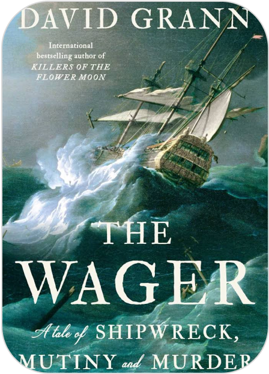

A Tale of Shipwreck, Mutiny and Murder
David Grann
From the #1 New York Times bestselling author of Killers of the Flower Moon, a page-turning story of shipwreck, survival, and savagery, culminating in a court martial that reveals a shocking truth. The powerful narrative reveals the deeper meaning of the events on The Wager, showing that it was not only the captain and crew who ended up on trial, but the very idea of empire.On January 28, 1742, a ramshackle vessel of patched-together wood and cloth washed up on the coast of Brazil. Inside were thirty emaciated men, barely alive, and they had an extraordinary tale to tell. They were survivors of His Majesty's Ship the Wager, a British vessel that had left England in 1740 on a secret mission during an imperial war with Spain. While the Wager had been chasing a Spanish treasure-filled galleon known as "the prize of all the oceans," it had wrecked on a desolate island off the coast of Patagonia. The men, after being marooned for months and facing starvation, built the flimsy craft and sailed for more than a hundred days, traversing nearly 3,000 miles of storm-wracked seas. They were greeted as heroes.But then ... six months later, another, even more decrepit craft landed on the coast of Chile. This boat contained just three castaways, and they told a very different story. The thirty sailors who landed in Brazil were not heroes - they were mutineers. The first group responded with countercharges of their own, of a tyrannical and murderous senior officer and his henchmen. It became clear that while stranded on the island the crew had fallen into anarchy, with warring factions fighting for dominion over the barren wilderness. As accusations of treachery and murder flew, the Admiralty convened a court martial to determine who was telling the truth. The stakes were life-and-death--for whomever the court found guilty could hang.The Wager is a grand tale of human behavior at the extremes told by one of our greatest nonfiction writers. Grann's recreation of the hidden world on a British warship rivals the work of Patrick O'Brian, his portrayal of the castaways' desperate straits stands up to the classics of survival writing such as The Endurance, and his account of the court martial has the savvy of a Scott Turow thriller. As always with Grann's work, the incredible twists of the narrative hold the reader spellbound.
Add to chart
Buy 20§
Mybook
Home Categories Contact 

Allah loves
The islam book...

The proudest blue

The Guns Of August

1491 : Nouvelles Ré...

The Wager: A T...
+213556565650

Mybook@gmail.com


Follow us

© 2023 All Rights Reserved